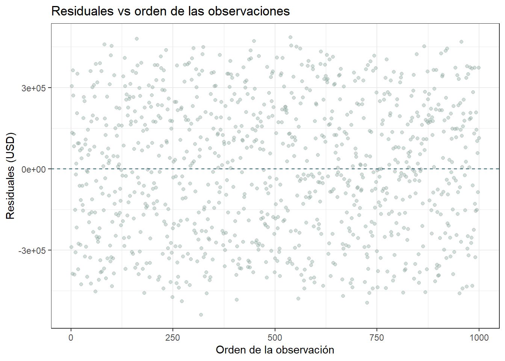
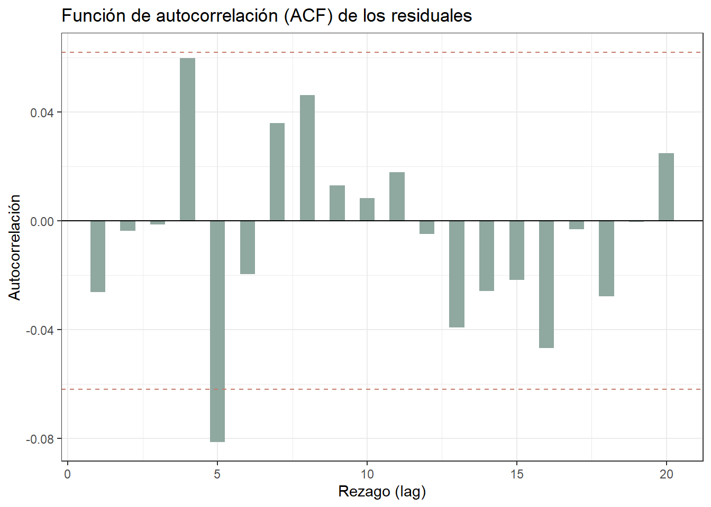
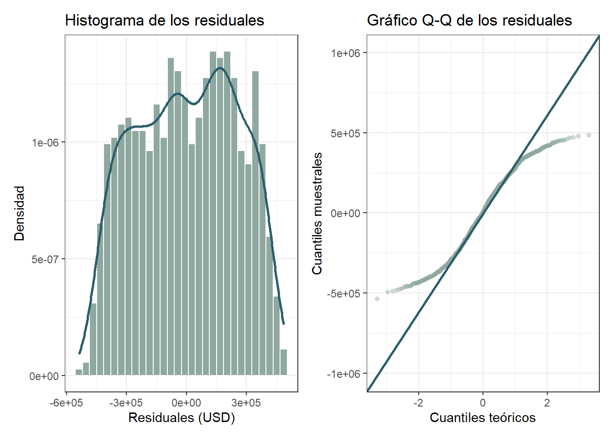
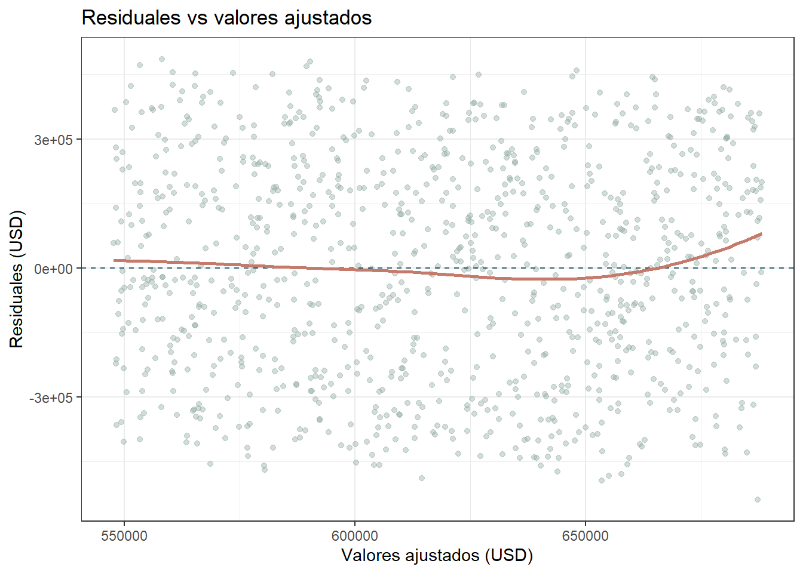
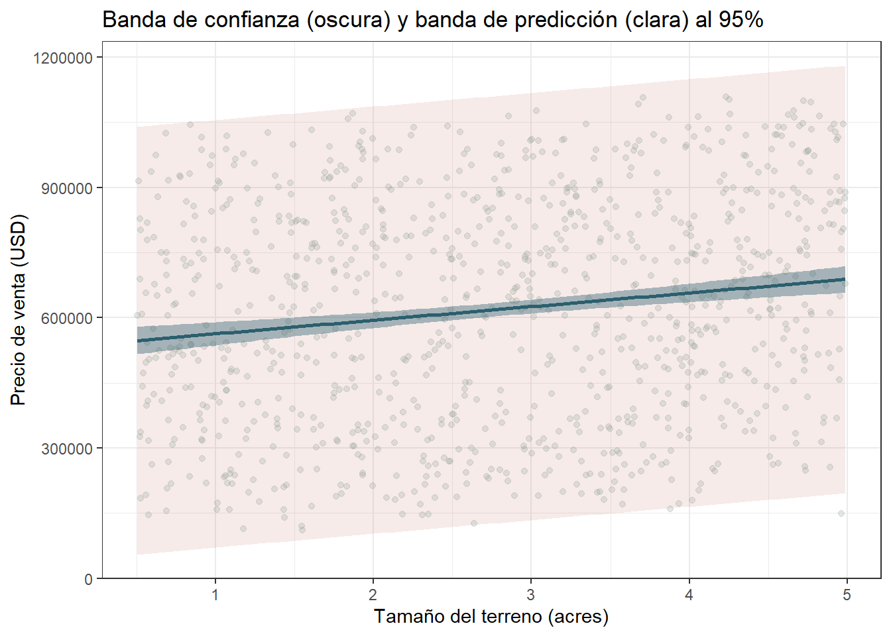

10 Validación de supuestos y predicción con el modelo de regresión lineal simple
En el apartado Modelo de regresión lineal con ‘Lot_Size’ como predictor de House_Price se estimó la recta \(\widehat{\text{House Price}} = 531.798 + 31.339 \cdot \text{Lot Size}\) y se hicieron pruebas de hipótesis e intervalos de confianza sobre sus parámetros. Todas esas conclusiones descansan sobre unos supuestos acerca de los errores \(\varepsilon\) que todavía no se han verificado: que son independientes, que siguen una distribución normal, que tienen media cero y que su varianza es constante. Solo después de revisar estos supuestos tiene sentido usar el modelo para predecir.
Se completa, a continuación, el análisis del modelo simple en tres partes: primero se hace una prueba de hipótesis sobre la varianza de los errores \(\sigma^2\), luego se hace el análisis de residuales para validar los cuatro supuestos y, por último, se construyen el intervalo de confianza para el precio medio y el intervalo de predicción para el precio de una vivienda nueva.
10.1 Prueba de hipótesis para la varianza de los errores (\(\sigma^2\))
En el apartado anterior se construyó el intervalo de confianza para \(\sigma^2\) y se encontró que el modelo se equivoca, en promedio, unos USD 250.000 al predecir el precio. Una pregunta natural es si ese error es significativamente mayor que un valor de referencia. Por ejemplo, ¿se puede afirmar que la desviación estándar de los errores supera los USD 200.000? Para responderlo se plantea la siguiente prueba unilateral superior.
\[H_0: \sigma^2 \le 200.000^2 \qquad \text{vs.} \qquad H_1: \sigma^2 > 200.000^2\]
El estadístico de prueba compara la varianza estimada con el valor de referencia \(\sigma_0^2\) y sigue una distribución \(\chi^2\) con \(n - 2\) grados de libertad.
\[T = \frac{SSE}{\sigma_0^2} = \frac{(n-2)\,\hat\sigma^2}{\sigma_0^2} \sim \chi^2_{n-2}\]
Se rechaza \(H_0\) si \(T > \chi^2_{1-\alpha;\,n-2}\).
n_rls <- nrow(data)
gl_rls <- n_rls - 2
sigma2_rls <- summary(modelo_lineal)$sigma^2
sigma0 <- 200000
T_sigma <- gl_rls * sigma2_rls / sigma0^2
chi_critico <- qchisq(0.95, gl_rls)
p_sigma <- pchisq(T_sigma, gl_rls, lower.tail = FALSE)
data.frame(
sigma_hat = format(round(sqrt(sigma2_rls)), big.mark = ","),
sigma0 = format(sigma0, big.mark = ",", scientific = FALSE),
T_valor = round(T_sigma, 2),
Chi_critico = round(chi_critico, 2),
P_valor = format(p_sigma, scientific = TRUE, digits = 3)
) %>%
kableExtra::kbl(row.names = FALSE,
col.names = c("σ estimada (USD)", "σ₀ (USD)", "Estadístico T", "χ² crítico (95%)", "P-valor")) %>%
kableExtra::kable_styling(bootstrap_options = c("striped", "hover", "condensed", "bordered"),
full_width = FALSE)| σ estimada (USD) | σ₀ (USD) | Estadístico T | χ² crítico (95%) | P-valor |
|---|---|---|---|---|
| 250,410 | 200,000 | 1564.49 | 1072.61 | 8.08e-28 |
El estadístico T = 1564.49 es mucho mayor que el valor crítico \(\chi^2_{0.95;\,998}\) = 1072.61 (p ≈ 8.08e-28), por lo que se rechaza \(H_0\). Hay evidencia de que la desviación estándar de los errores del modelo simple supera los USD 200.000, lo que confirma que, aunque la pendiente es significativa, las predicciones de este modelo tienen un margen de error muy amplio.
10.2 Análisis de residuales
Los residuales \(e_i = y_i - \hat y_i\) son la diferencia entre el precio real de cada vivienda y el precio que predice la recta. Como los errores \(\varepsilon_i\) no se pueden observar, los residuales son su mejor aproximación, y sobre ellos se validan los cuatro supuestos del modelo.
residuos_rls <- residuals(modelo_lineal)
diag_rls <- data.frame(
Orden = 1:length(residuos_rls),
Ajustados = fitted(modelo_lineal),
Residuales = residuos_rls
)10.2.1 Independencia de los errores
El supuesto de independencia dice que el error de una vivienda no debe dar información sobre el error de la siguiente. Como el conjunto de datos no trae una variable de tiempo, se usa el orden en que aparecen las filas. Si los errores son independientes, al graficarlos en ese orden se debería ver una nube aleatoria alrededor de cero, sin rachas ni tendencias.
diag_rls %>%
ggplot(aes(x = Orden, y = Residuales)) +
geom_point(alpha = 0.4, color = "#8fa8a0") +
geom_hline(yintercept = 0, linetype = "dashed", color = "#2c5f6e") +
labs(title = "Residuales vs orden de las observaciones",
x = "Orden de la observación", y = "Residuales (USD)") +
theme_bw()
La nube no muestra ningún patrón: los residuales suben y bajan sin rachas visibles. Para confirmarlo formalmente se aplica la prueba de Durbin-Watson, que contrasta \(H_0\): los errores no están autocorrelacionados frente a \(H_1\): sí lo están. Un estadístico D-W cercano a 2 indica independencia.
set.seed(123)
dw_rls <- car::durbinWatsonTest(modelo_lineal)
data.frame(
Autocorrelacion = round(dw_rls$r, 4),
DW = round(dw_rls$dw, 4),
P_valor = round(dw_rls$p, 3)
) %>%
kableExtra::kbl(row.names = FALSE,
col.names = c("Autocorrelación (lag 1)", "Estadístico D-W", "P-valor")) %>%
kableExtra::kable_styling(bootstrap_options = c("striped", "hover", "condensed", "bordered"),
full_width = FALSE)| Autocorrelación (lag 1) | Estadístico D-W | P-valor |
|---|---|---|
| -0.0263 | 2.0511 | 0.43 |
El estadístico D-W = 2.05 es prácticamente igual a 2, y el p-valor (mayor que 0.05) indica que no se rechaza \(H_0\). Como complemento, la función de autocorrelación (ACF) muestra la correlación de los residuales con ellos mismos a distintos rezagos; si ninguna barra se sale de las bandas de confianza, no hay autocorrelación.
acf_rls <- acf(residuos_rls, plot = FALSE, lag.max = 20)
banda <- qnorm(0.975) / sqrt(length(residuos_rls))
data.frame(Rezago = acf_rls$lag[-1], ACF = acf_rls$acf[-1]) %>%
ggplot(aes(x = Rezago, y = ACF)) +
geom_col(fill = "#8fa8a0", width = 0.5) +
geom_hline(yintercept = c(-banda, banda), linetype = "dashed", color = "#c47b6b") +
geom_hline(yintercept = 0, color = "black") +
labs(title = "Función de autocorrelación (ACF) de los residuales",
x = "Rezago (lag)", y = "Autocorrelación") +
theme_bw()
Prácticamente todas las barras quedan dentro de las bandas, salvo una que se sale levemente en el rezago 5 (−0.081), algo esperable por azar entre 20 rezagos (con un 5% de significancia, se espera que alrededor de 1 de cada 20 se salga). En conjunto, se cumple el supuesto de independencia de los errores.
10.2.2 Normalidad de los errores
Para este supuesto se contrasta \(H_0\): los errores siguen una distribución normal frente a \(H_1\): no la siguen. Primero se revisa de forma gráfica con el histograma y el gráfico cuantil-cuantil (Q-Q), en el que los puntos deberían caer sobre la línea diagonal si los residuales son normales.
g_hist_rls <- diag_rls %>%
ggplot(aes(x = Residuales)) +
geom_histogram(aes(y = after_stat(density)), bins = 30, fill = "#8fa8a0", color = "white") +
geom_density(color = "#2c5f6e", linewidth = 1) +
labs(title = "Histograma de los residuales", x = "Residuales (USD)", y = "Densidad") +
theme_bw()
g_qq_rls <- diag_rls %>%
ggplot(aes(sample = Residuales)) +
stat_qq(alpha = 0.4, color = "#8fa8a0") +
stat_qq_line(color = "#2c5f6e", linewidth = 1) +
labs(title = "Gráfico Q-Q de los residuales", x = "Cuantiles teóricos", y = "Cuantiles muestrales") +
theme_bw()
g_hist_rls + g_qq_rls
El histograma tiene una forma casi plana, más parecida a un rectángulo que a una campana, y en el gráfico Q-Q los puntos se separan de la diagonal en los dos extremos, formando una “S”. Ambas son señales de que los residuales tienen colas más cortas que las de una distribución normal. Se confirma con la prueba de Shapiro-Wilk.
sw_rls <- shapiro.test(residuos_rls)
data.frame(
W = round(sw_rls$statistic, 4),
P_valor = format(sw_rls$p.value, scientific = TRUE, digits = 3)
) %>%
kableExtra::kbl(row.names = FALSE,
col.names = c("Estadístico W de Shapiro-Wilk", "P-valor")) %>%
kableExtra::kable_styling(bootstrap_options = c("striped", "hover", "condensed", "bordered"),
full_width = FALSE)| Estadístico W de Shapiro-Wilk | P-valor |
|---|---|
| 0.9669 | 2.57e-14 |
Con W = 0.9669 y p ≈ 2.57e-14, se rechaza \(H_0\): los residuales del modelo simple no siguen una distribución normal. Esto es coherente con lo observado en el análisis de la variable objetivo, donde House_Price mostró una distribución aproximadamente uniforme. Como Lot_Size explica tan poco del precio (R² = 0.026), los residuales terminan heredando casi la misma forma plana del precio.
¿Qué tan grave es esto? Con n = 1.000 observaciones, el teorema del límite central hace que los estimadores \(\hat\beta_0\) y \(\hat\beta_1\) tengan una distribución aproximadamente normal aunque los errores no lo sean, por lo que las pruebas t y F del apartado anterior siguen siendo razonablemente confiables. Donde sí pesa este incumplimiento es en el intervalo de predicción para una vivienda individual (al final de este apartado), que depende directamente de la forma de la distribución de los errores.
10.2.3 Media cero de los errores
Este supuesto plantea \(H_0: \mu_\varepsilon = 0\) frente a \(H_1: \mu_\varepsilon \neq 0\). Cuando el modelo incluye intercepto, el método de mínimos cuadrados garantiza que la media de los residuales es exactamente cero, así que el supuesto se cumple de forma automática. Aun así, se verifica con una prueba t de una muestra.
t_media_rls <- t.test(residuos_rls, mu = 0)
data.frame(
Media = format(mean(residuos_rls), scientific = TRUE, digits = 3),
t = round(t_media_rls$statistic, 4),
P_valor = round(t_media_rls$p.value, 4)
) %>%
kableExtra::kbl(row.names = FALSE,
col.names = c("Media de los residuales", "Estadístico t", "P-valor")) %>%
kableExtra::kable_styling(bootstrap_options = c("striped", "hover", "condensed", "bordered"),
full_width = FALSE)| Media de los residuales | Estadístico t | P-valor |
|---|---|---|
| 7.86e-12 | 0 | 1 |
La media de los residuales es prácticamente cero (un número del orden de \(10^{-12}\), que es solo error de redondeo del computador) y el p-valor es 1, así que no se rechaza \(H_0\). Se cumple el supuesto de media cero.
10.2.4 Varianza constante de los errores (homocedasticidad)
El último supuesto plantea \(H_0\): la varianza de los errores es constante frente a \(H_1\): no lo es. Gráficamente se revisa con el diagrama de residuales contra valores ajustados: si la varianza es constante, la nube debe tener el mismo ancho a lo largo de todo el eje horizontal, sin forma de embudo.
diag_rls %>%
ggplot(aes(x = Ajustados, y = Residuales)) +
geom_point(alpha = 0.4, color = "#8fa8a0") +
geom_hline(yintercept = 0, linetype = "dashed", color = "#2c5f6e") +
geom_smooth(method = "loess", formula = y ~ x, se = FALSE, color = "#c47b6b") +
labs(title = "Residuales vs valores ajustados",
x = "Valores ajustados (USD)", y = "Residuales (USD)") +
theme_bw()
La nube mantiene un ancho similar en todo el rango de valores ajustados y la curva suavizada se queda pegada a cero, sin abrirse ni cerrarse. Se confirma con la prueba de Breusch-Pagan, aplicada con bptest() del paquete lmtest y con ncvTest() del paquete car.
bp_rls <- lmtest::bptest(modelo_lineal)
ncv_rls <- car::ncvTest(modelo_lineal)
data.frame(
Prueba = c("Breusch-Pagan (lmtest::bptest)", "Score de varianza no constante (car::ncvTest)"),
Estadistico = round(c(bp_rls$statistic, ncv_rls$ChiSquare), 4),
gl = c(bp_rls$parameter, ncv_rls$Df),
P_valor = round(c(bp_rls$p.value, ncv_rls$p), 4)
) %>%
kableExtra::kbl(row.names = FALSE,
col.names = c("Prueba", "Estadístico", "gl", "P-valor")) %>%
kableExtra::kable_styling(bootstrap_options = c("striped", "hover", "condensed", "bordered"),
full_width = FALSE)| Prueba | Estadístico | gl | P-valor |
|---|---|---|---|
| Breusch-Pagan (lmtest::bptest) | 0.0597 | 1 | 0.8070 |
| Score de varianza no constante (car::ncvTest) | 0.0270 | 1 | 0.8695 |
Ambas pruebas dan p-valores muy por encima de 0.05 (0.807 y 0.870), por lo que no se rechaza \(H_0\): la varianza de los errores puede considerarse constante.
10.2.5 Resumen de la validación de supuestos
data.frame(
Supuesto = c("Independencia", "Normalidad", "Media cero", "Varianza constante"),
Prueba = c("Durbin-Watson", "Shapiro-Wilk", "t de una muestra", "Breusch-Pagan"),
P_valor = c(round(dw_rls$p, 3),
format(sw_rls$p.value, scientific = TRUE, digits = 3),
round(t_media_rls$p.value, 3),
round(bp_rls$p.value, 3)),
Cumple = c(ifelse(dw_rls$p > 0.05, "Sí", "No"),
ifelse(sw_rls$p.value > 0.05, "Sí", "No"),
ifelse(t_media_rls$p.value > 0.05, "Sí", "No"),
ifelse(bp_rls$p.value > 0.05, "Sí", "No"))
) %>%
kableExtra::kbl(row.names = FALSE,
col.names = c("Supuesto", "Prueba", "P-valor", "¿Se cumple?")) %>%
kableExtra::kable_styling(bootstrap_options = c("striped", "hover", "condensed", "bordered"),
full_width = FALSE)| Supuesto | Prueba | P-valor | ¿Se cumple? |
|---|---|---|---|
| Independencia | Durbin-Watson | 0.43 | Sí |
| Normalidad | Shapiro-Wilk | 2.57e-14 | No |
| Media cero | t de una muestra | 1 | Sí |
| Varianza constante | Breusch-Pagan | 0.807 | Sí |
El modelo simple cumple tres de los cuatro supuestos: los errores son independientes, tienen media cero y varianza constante. El que falla es la normalidad, y la razón de fondo es que Lot_Size, por sí solo, deja sin explicar casi toda la variabilidad del precio.
10.3 Intervalo de confianza para el precio medio \(E(y \mid x_0)\)
Una primera forma de usar el modelo es estimar el precio promedio de todas las viviendas que tienen un mismo tamaño de terreno \(x_0\). Por ejemplo, ¿cuál es el precio medio de las viviendas con un terreno de 3 acres, y qué tan precisa es esa estimación?
La estimación puntual se obtiene reemplazando \(x_0\) en la recta ajustada, \(\hat y(x_0) = \hat\beta_0 + \hat\beta_1 x_0\), y el intervalo de confianza del \(100(1-\alpha)\%\) es el siguiente.
\[\hat y(x_0) \pm t_{1-\alpha/2;\,n-2}\;\hat\sigma\sqrt{\frac{1}{n} + \frac{(x_0 - \bar x)^2}{S_{xx}}}\]
Se calcula primero paso a paso para \(x_0\) = 3 acres.
x_bar_rls <- mean(data$Lot_Size)
Sxx_rls <- sum((data$Lot_Size - x_bar_rls)^2)
sigma_rls <- summary(modelo_lineal)$sigma
b_rls <- coef(modelo_lineal)
t_critico <- qt(0.975, df = gl_rls)
x0 <- 3
y0_hat <- unname(b_rls[1] + b_rls[2] * x0)
se_media <- sigma_rls * sqrt(1 / n_rls + (x0 - x_bar_rls)^2 / Sxx_rls)
data.frame(
x0 = x0,
y_hat = round(y0_hat, 2),
EE = round(se_media, 2),
LI = round(y0_hat - t_critico * se_media, 2),
LS = round(y0_hat + t_critico * se_media, 2)
) %>%
kableExtra::kbl(row.names = FALSE,
col.names = c("Lot_Size (acres)", "Precio medio estimado", "Error estándar", "IC 95% inferior", "IC 95% superior")) %>%
kableExtra::kable_styling(bootstrap_options = c("striped", "hover", "condensed", "bordered"),
full_width = FALSE)| Lot_Size (acres) | Precio medio estimado | Error estándar | IC 95% inferior | IC 95% superior |
|---|---|---|---|---|
| 3 | 625815.6 | 8033.68 | 610050.8 | 641580.4 |
El mismo resultado se obtiene con predict() usando interval = "confidence". Para ver cómo cambia el ancho del intervalo, se calcula también en la media de Lot_Size (2.78 acres) y cerca del extremo superior del rango (4.9 acres).
nuevos_x <- data.frame(Lot_Size = c(x_bar_rls, 3, 4.9))
ic_media <- predict(modelo_lineal, newdata = nuevos_x, interval = "confidence")
data.frame(
Lot_Size = round(nuevos_x$Lot_Size, 2),
Ajuste = round(ic_media[, "fit"], 2),
LI = round(ic_media[, "lwr"], 2),
LS = round(ic_media[, "upr"], 2),
Ancho = round(ic_media[, "upr"] - ic_media[, "lwr"], 2)
) %>%
kableExtra::kbl(row.names = FALSE,
col.names = c("Lot_Size (acres)", "Precio medio estimado", "IC 95% inferior", "IC 95% superior", "Ancho del intervalo")) %>%
kableExtra::kable_styling(bootstrap_options = c("striped", "hover", "condensed", "bordered"),
full_width = FALSE)| Lot_Size (acres) | Precio medio estimado | IC 95% inferior | IC 95% superior | Ancho del intervalo |
|---|---|---|---|---|
| 2.78 | 618861.0 | 603321.9 | 634400.1 | 31078.24 |
| 3.00 | 625815.6 | 610050.8 | 641580.4 | 31529.67 |
| 4.90 | 685360.1 | 655569.2 | 715151.1 | 59581.93 |
El cálculo manual coincide con predict(). Se estima que el precio medio de las viviendas con 3 acres de terreno es de USD 625.816 y, con una confianza del 95%, ese precio medio poblacional está entre USD 610.051 y USD 641.580. El intervalo es más angosto en la media de Lot_Size (ancho de unos USD 31.000) y se va ensanchando a medida que \(x_0\) se aleja de ella (casi USD 60.000 en 4.9 acres), porque en los extremos del rango hay menos información para estimar la recta. Esto es justo lo que indica el término \((x_0 - \bar x)^2 / S_{xx}\) de la fórmula.
10.4 Intervalo de predicción para una vivienda nueva \(y_0\)
El intervalo anterior responde a una pregunta sobre el promedio. Pero si un comprador encuentra una vivienda específica con 3 acres de terreno, la pregunta es otra: ¿entre qué valores estará el precio de esa vivienda en particular? Ahí no basta con la incertidumbre de la recta; hay que sumar la variabilidad propia de cada vivienda alrededor de ella, \(\sigma^2\). Por eso el intervalo de predicción tiene un “1 +” dentro de la raíz.
\[\hat y(x_0) \pm t_{1-\alpha/2;\,n-2}\;\hat\sigma\sqrt{1 + \frac{1}{n} + \frac{(x_0 - \bar x)^2}{S_{xx}}}\]
se_pred <- sigma_rls * sqrt(1 + 1 / n_rls + (x0 - x_bar_rls)^2 / Sxx_rls)
ip_vivienda <- predict(modelo_lineal, newdata = data.frame(Lot_Size = x0), interval = "prediction")
data.frame(
Calculo = c("Manual", "predict()"),
Ajuste = round(c(y0_hat, ip_vivienda[, "fit"]), 2),
LI = round(c(y0_hat - t_critico * se_pred, ip_vivienda[, "lwr"]), 2),
LS = round(c(y0_hat + t_critico * se_pred, ip_vivienda[, "upr"]), 2)
) %>%
kableExtra::kbl(row.names = FALSE,
col.names = c("Cálculo", "Precio predicho", "IP 95% inferior", "IP 95% superior")) %>%
kableExtra::kable_styling(bootstrap_options = c("striped", "hover", "condensed", "bordered"),
full_width = FALSE)| Cálculo | Precio predicho | IP 95% inferior | IP 95% superior |
|---|---|---|---|
| Manual | 625815.6 | 134172.7 | 1117458 |
| predict() | 625815.6 | 134172.7 | 1117458 |
Para una vivienda nueva con 3 acres de terreno, el precio predicho sigue siendo USD 625.816, pero con una confianza del 95% su precio estará entre USD 134.173 y USD 1.117.458. La siguiente tabla pone los dos intervalos lado a lado.
ic_3 <- predict(modelo_lineal, newdata = data.frame(Lot_Size = x0), interval = "confidence")
data.frame(
Intervalo = c("Confianza para el precio medio", "Predicción para una vivienda nueva"),
LI = round(c(ic_3[, "lwr"], ip_vivienda[, "lwr"]), 2),
LS = round(c(ic_3[, "upr"], ip_vivienda[, "upr"]), 2),
Ancho = round(c(ic_3[, "upr"] - ic_3[, "lwr"], ip_vivienda[, "upr"] - ip_vivienda[, "lwr"]), 2)
) %>%
kableExtra::kbl(row.names = FALSE,
col.names = c("Tipo de intervalo (x₀ = 3 acres)", "Límite inferior", "Límite superior", "Ancho")) %>%
kableExtra::kable_styling(bootstrap_options = c("striped", "hover", "condensed", "bordered"),
full_width = FALSE)| Tipo de intervalo (x₀ = 3 acres) | Límite inferior | Límite superior | Ancho |
|---|---|---|---|
| Confianza para el precio medio | 610050.8 | 641580.4 | 31529.67 |
| Predicción para una vivienda nueva | 134172.7 | 1117458.5 | 983285.76 |
El intervalo de predicción es unas 31 veces más ancho que el de confianza (casi USD 1 millón frente a unos USD 31.500). En la práctica, eso significa que el modelo simple sirve para estimar el precio promedio de un grupo de viviendas con buena precisión, pero es casi inútil para predecir el precio de una vivienda individual: el intervalo va desde poco más de USD 130.000 hasta más de USD 1.1 millones, que es prácticamente todo el rango de precios observado en los datos. Hay que recordar, además, que este intervalo supone errores normales, supuesto que no se cumplió.
El siguiente gráfico muestra las dos bandas sobre la nube de puntos completa.
grilla <- data.frame(Lot_Size = seq(min(data$Lot_Size), max(data$Lot_Size), length.out = 100))
bandas <- cbind(grilla,
predict(modelo_lineal, newdata = grilla, interval = "confidence"),
IP_inf = predict(modelo_lineal, newdata = grilla, interval = "prediction")[, "lwr"],
IP_sup = predict(modelo_lineal, newdata = grilla, interval = "prediction")[, "upr"])
ggplot() +
geom_point(data = data, aes(x = Lot_Size, y = House_Price), alpha = 0.25, color = "#8fa8a0") +
geom_ribbon(data = bandas, aes(x = Lot_Size, ymin = IP_inf, ymax = IP_sup), fill = "#c47b6b", alpha = 0.15) +
geom_ribbon(data = bandas, aes(x = Lot_Size, ymin = lwr, ymax = upr), fill = "#2c5f6e", alpha = 0.4) +
geom_line(data = bandas, aes(x = Lot_Size, y = fit), color = "#2c5f6e", linewidth = 1) +
labs(title = "Banda de confianza (oscura) y banda de predicción (clara) al 95%",
x = "Tamaño del terreno (acres)", y = "Precio de venta (USD)") +
theme_bw()
La banda de confianza (oscura) es angosta y sigue de cerca a la recta, mientras que la banda de predicción (clara) cubre prácticamente toda la nube de puntos. Esta diferencia resume bien la conclusión del modelo simple: el efecto del tamaño del terreno sobre el precio medio es real y se estima con precisión, pero el terreno, por sí solo, no alcanza para predecir el precio de una vivienda concreta.